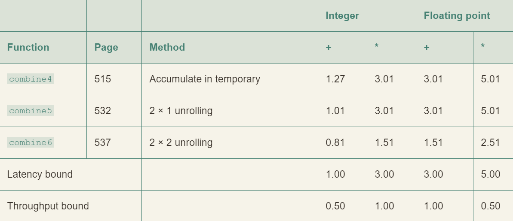
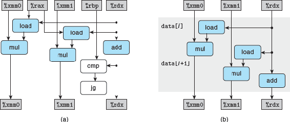
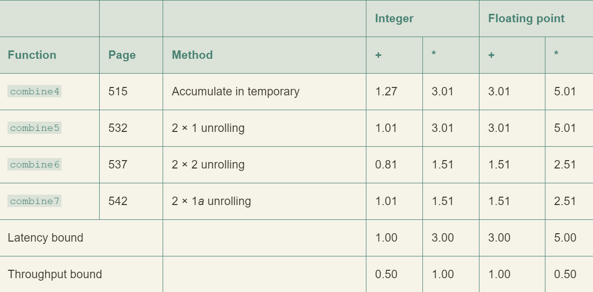
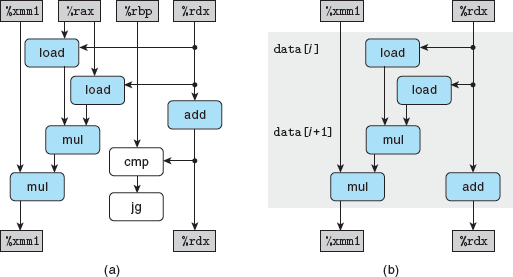

/* Create vector of specified length */ vec_ptr new_vec(long len) { /* Allocate header structure */ vec_ptr result = (vec_ptr) malloc(sizeof(vec_rec)); data_t *data = NULL; if (!result) return NULL; /* Couldn't allocate storage */ result->len = len; /* Allocate array */ if (len > 0) { data = (data_t *)calloc(len, sizeof(data_t)); if (!data) { free((void *) result); return NULL; /* Couldn't allocate storage */ } } /* Data will either be NULL or allocated array */ result->data = data; return result; }
/* * Retrieve vector element and store at dest. * Return 0 (out of bounds) or 1 (successful) */ int get_vec_element(vec_ptr v, long index, data_t *dest) { if (index < 0 | | index >= v->len) return 0; *dest = v->data [index]; return 1 ; }
/* Return length of vector */ long vec_length(vec_ptr v) { return v->len; }
向量抽象数据类型的实现
1 2 3 4 5 6 7 8 9 10 11 12
/* Implementation with maximum use of data abstraction */ void combinel(vec_ptr v, data_t *dest) { long i;
*dest = IDENT; for (i = 0; i < vec_length(v); i++) { data_t val; get_vec_element(v, i, &val); *dest = *dest OP val; } }
合并运算的初始实现
求和声明：
1 2
#define IDENT 0 #define OP +
乘积声明：
1 2
#define IDENT 1 #define OP *
消除循环的低效率
1 2 3 4 5 6 7 8 9 10 11 12 13
/* Move call to vec_length out of loop */ void combine2(vec_ptr v, data_t *dest) { long i; long length = vec_length(v);
*dest = IDENT; for (i = 0; i < length; i++) { data_t val; get_vec_element(v, i, &val); *dest = *dest OP val; } }
/* Direct access to vector data */ void combine3(vec_ptr v, data_t *dest) { long i; long length = vec_length(v); data_t *data = get_vec_start(v);
*dest = IDENT; for (i = 0; i < length; i++) { *dest = *dest OP data[i]; } }
这并没有立刻得到明显的提升，显然还有其他瓶颈
消除不必要的内存引用
分析 combine3 循环代码生成的汇编代码：
1 2 3 4 5 6 7 8 9
Inner loop of combine3. data_t = double, OP = * dest in %rbx, data+i in %rdx, data+length in %rax . L17: loop: vmovsd (%rbx), %xmm0 Read product from dest vmulsd (%rdx), %xmm0, %xmm0 Multiply product by data[i] vmovsd %xmm0, (%rbx) Store product at dest addq $8, %rdx Increment data+i cmpq %rax, %rdx Compare to data+length jne .L17 If !=, goto loop
它将代码改变为：在寄存器 %rdx 中维护一个指向第 i 个数据元素的指针，在注释中显示为 data+i。
该指针在每次迭代中增加8。通过将该指针与存储在寄存器 %rax 中的指针进行比较来检测循环终止。
每次迭代都会从内存中读取和写入累积的值。这种读写是浪费的，因为每次迭代开始时从 dest 读取的值应该只是前一次迭代结束时写入的值。
1 2 3 4 5 6 7
Inner loop of combine4. data_t = double, OP = * acc in %xmm0, data+i in %rdx, data+length in %rax .L25: loop: vmulsd (%rdx), %xmm0, %xmm0 Multiply acc by data[i] addq $8, %rdx Increment data+i cmpq %rax, %rdx Compare to data+length jne .L25 If !=, goto loop
1 2 3 4 5 6 7 8 9 10 11 12 13
1 /* Accumulate result in local variable */ 2 void combine4(vec_ptr v, data_t *dest) 3 { 4 long i; 5 long length = vec_length(v); 6 data_t *data = get_vec_start(v); 7 data_t acc = IDENT; 8 9 for (i = 0; i < length; i++) { 10 acc = acc OP data[i]; 11 } 12 *dest = acc; 13 }
我们引入了一个临时变量 acc，用于在循环中累积计算出的值，只有在循环完成后，结果才存储在 dest 中。
如上面的汇编代码所示，编译器现在可以使用寄存器%xmm0来保存累积值。
与 combine3中的循环相比，我们将每次迭代的内存操作从两次读一次写减少到只需要一次读。
循环展开
1 2 3 4 5 6 7 8 9 10 11 12 13 14 15 16 17 18 19
/* 2 x 1 loop unrolling */ void combine5(vec_ptr v, data_t *dest) { long i; long length = vec_length(v); long limit = length-1; data_t *data = get_vec_start(v); data_t acc = IDENT; 9 /* Combine 2 elements at a time */ for (i = 0; i < limit; i+=2) { acc = (acc OP data[i]) OP data[i+1]; }
/* Finish any remaining elements */ for (;i < length; i++) { acc = acc OP data[i]; } *dest = acc; }
确保第一次循环不会超出数组的界限
1 2 3 4 5 6 7 8
Inner loop of combine5. data_t = double, OP = * i in %rdx, data %rax, limit in %rbx, acc in %xmm0 1 .L35: loop: 2 vmulsd (%rax,%rdx,8), %xmm0, %xmm0 Multiply acc by data[i] 3 vmulsd 8(%rax,%rdx,8), %xmm0, %xmm0 Multiply acc by data[i+1] 4 addq $2, %rdx Increment i by 2 5 cmpq %rdx, %rbp Compare to limit:i 6 jg .L35 If >, goto loop
/* 2 x 2 loop unrolling */ void combine6(vec_ptr v, data_t *dest) { long i; long length = vec_length(v); long limit = length-1; data_t *data = get_vec_start(v); data_t acc0 = IDENT; data_t acc1 = IDENT;
/* Combine 2 elements at a time */ for (i = 0; i < limit; i+=2) { acc0 = acc0 OP data[i]; acc1 = acc1 OP data[i+1]; }
/* Finish any remaining elements */ for (;i < length; i++) { acc0 = acc0 OP data[i]; } *dest = acc0 OP acc1; }
2 x 2 循环展开
打破了由延迟界限设下的限制。处理器不再需要延迟一个加法或乘法操作以待前一个操作完成


重新结合变换
1 2 3 4 5 6 7 8 9 10 11 12 13 14 15 16 17 18 19
/* 2 x 1a loop unrolling */ void combine7(vec_ptr v, data_t *dest) { long i; long length = vec_length(v); long limit = length-1; data_t *data = get_vec_start(v); data_t acc = IDENT; 9 /* Combine 2 elements at a time */ for (i = 0; i < limit; i+=2) { acc = acc OP (data[i] OP data[i+1]); }
/* Finish any remaining elements */ for (;i < length; i++) { acc = acc OP data[i]; } *dest = acc; }
与 combine 5 不同的之处于第 11 行
性能提升很大，几乎与 combine6 相同
修改之后，每次迭代内的第一个乘法都不需要等待前一次迭代的累计值就可以执行


限制因素
寄存器溢出
循环并行的好处受到汇编代码描述计算的能力限制。
如果并行度超过可用寄存器的数量，编译器会诉诸溢出。
上图可以发现，循环展开并没有改善，有些甚至还变差了
分支预测
分支预测失败的惩罚是很严重的，所以我们需要控制编写程序的方法
1 2 3 4 5 6 7 8 9 10 11
/* Rearrange two vectors so that for each i, b[i] >= a[i] */ void minmax1(long a[], long b[], long n) { long i; for (i = 0; i < n; i++) { if (a[i] > b[i]) { long t = a[i]; a[i] = b[i]; b[i] = t; } } }
/* Rearrange two vectors so that for each i, b[i] >= a[i] */ void minmax2(long a[], long b[], long n) { long i; for (i = 0; i < n; i++) { long min = a[i] < b[i] ? a[i] : b[i]; long max = a[i] < b[i] ? b[i] : a[i]; a[i] = min; b[i] = max; } }